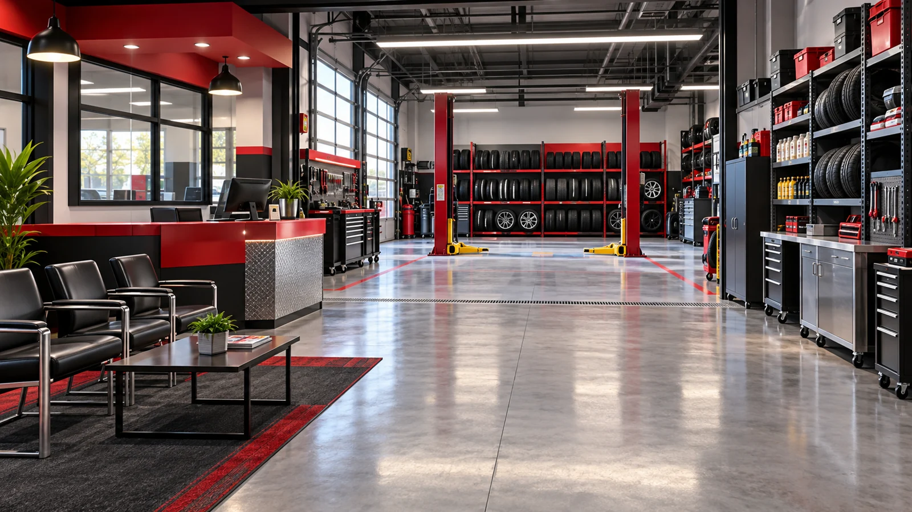
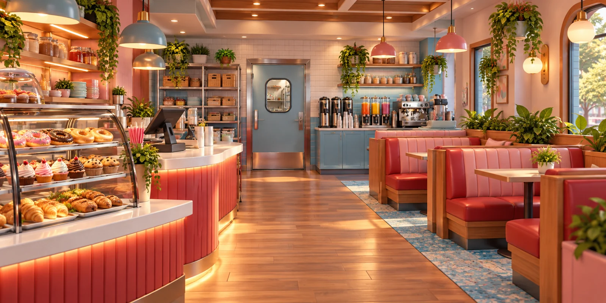
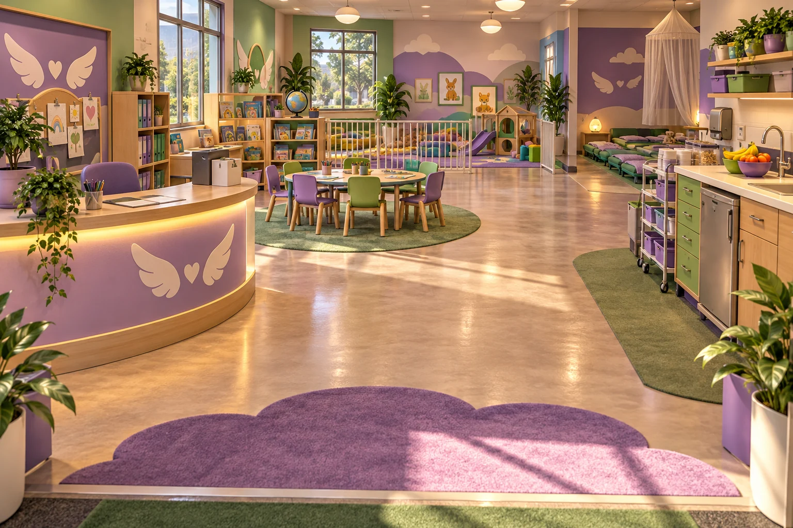
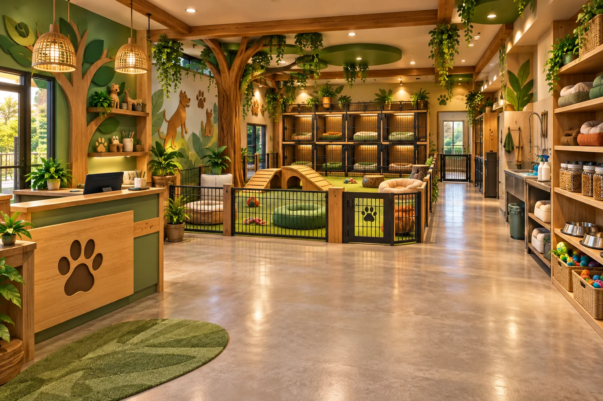
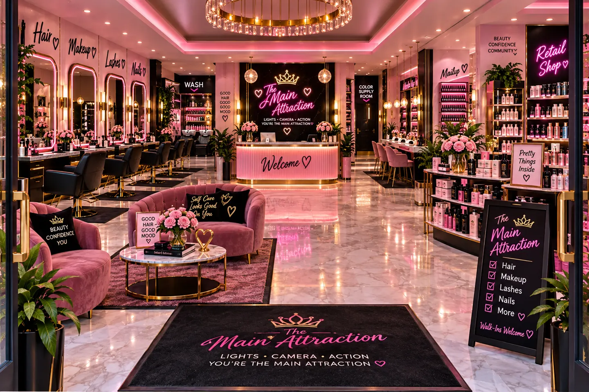

Owner interview day
Your business is ready for you.
Choose your shop. Applicants are already waiting, and you can begin interviewing right away. Read your questions aloud, hear their answers, and decide who fits your team.

3K Tire Shop
Allen, Nick
Interviews, training & shop preparation
Cool Vibes Café
Olivia, Kaylee, Alyssa, Jocquan
Interviews, training & shop preparation
Guardian Angel Childcare
Gia, Adon, Jacob, Dalton
Interviews, training & shop preparation
The Zoo Pet Sitting
Max / Bradley, Jaden
Interviews, training & shop preparation
The Main Attraction
Aubry, Jasmine & Chevi
Interviews, training & shop preparationBusiness bank & repeat inventory ordering
Every student business has separate classroom checking and savings, supply purchases and a transaction ledger. Customers stay off until you start a practice shift.
Open business bank accounts →